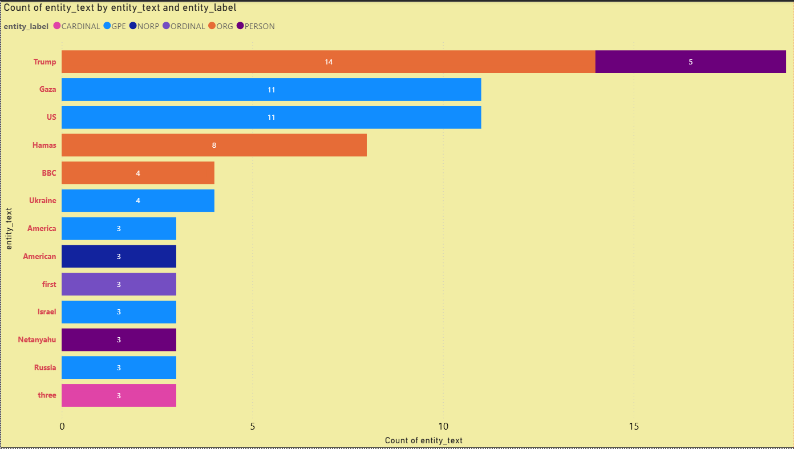
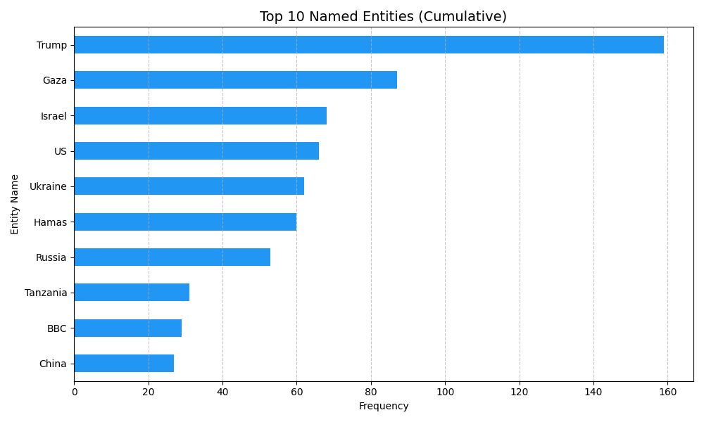

üåê Automated Multilingual News Sentiment Pipeline
End-to-end data analysis project showcasing Python automation, NLP, MySQL modeling, and Power BI visualization.
üó∫Ô∏è Automated Pipeline Process Flow
System Architecture (Data Flow)
This detailed diagram illustrates the complete automated process, from the initial script run to final database archiving and visualization setup.
Click to Enlarge: Complete Data Flow
üìä Key Visualization Outputs (Click to Enlarge)
Power BI Dashboard (Analysis)
Screenshots of the final dashboard demonstrating historical sentiment trends, source comparison, and trending entity analysis.
Trending Entity Volume
Sentiment Trend Over Time

Geographic News Focus (GPE)

Insight: The line chart clearly shows the volatility of sentiment, allowing for immediate identification of major tone shifts between days, such as the sharp drop in sentiment for BBC Russian on September 30th.
üìà Pipeline Validation (Matplotlib Charts)
Cumulative & Daily Analysis
These charts are generated by Python to validate sentiment classification and entity extraction across all data processed to date.
Top Entities Across All Historical Runs
Source Sentiment Comparison (Daily Snapshot)
üßê Understanding Named Entities (NER)
Core NLP Concepts Explained
The pipeline relies on these natural language processing and machine learning techniques to transform raw text into measurable data points before entity extraction.
| Concept | Definition & Role in Pipeline |
|---|---|
| NLP | **Natural Language Processing.** The branch of AI that gives computers the ability to read, understand, and derive meaning from human languages. It's the foundation of translation and entity extraction. |
| Sentiment Analysis | The process of computationally identifying and categorizing subjective opinions, often determining whether the text's tone is positive, negative, or neutral. |
| Polarity | A quantitative value ranging from **-1.0** (extremely negative sentiment) to **+1.0** (extremely positive sentiment). It's the final output of the Sentiment Analysis model. |
| NER | **Named Entity Recognition.** The process of locating and classifying key elements in text into predefined categories like names of persons, organizations, or locations. |
spaCy Named Entity Labels
The Python pipeline uses the spaCy library to perform NER, classifying every proper noun in the translated headlines into specific categories. This allows for deep thematic analysis beyond just counting keywords.
| Entity Label | Description | Example in News |
|---|---|---|
| PERSON | People, including fictional characters. | Joe Biden, King Charles |
| ORG | Companies, agencies, institutions, or groups. | United Nations, Central Bank |
| GPE | Geopolitical Entities (Countries, cities, states). | Mexico, New Delhi |
| DATE | Absolute or relative dates or periods. | last week, 2025, September 30 |
| NORP | Nationalities or religious/political groups. | American, Russian, Communist Party |
| CARDINAL | Numerals that do not fall under other types. | 1.5 million, six people, third |
**Analysis Focus:** By filtering for these labels, the charts accurately track who and what is trending, showing both major topics (PERSON, ORG) and context (GPE, DATE).